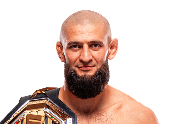

Khamzat Chimaev es un peleador profesional de artes marciales mixtas nacido el 1 de mayo de 1994 en Chechenia, Rusia. Desde joven se trasladó a Suecia, país donde desarrolló gran parte de su carrera deportiva. Chimaev se hizo famoso en la UFC por su estilo extremadamente agresivo y dominante, logrando varias victorias rápidas que llamaron la atención del mundo del MMA. Su combinación de lucha, grappling y potencia en el striking lo convirtió rápidamente en uno de los contendientes más peligrosos de su división. Gracias a su intensidad dentro del octágono y su confianza, Chimaev se ha posicionado como una de las grandes promesas y estrellas del deporte.

Khamzat Chimaev es conocido por su estilo extremadamente dominante basado en la lucha y la presión constante sobre sus rivales. Su capacidad para derribar oponentes y controlar el combate en el suelo lo ha convertido en uno de los peleadores más temidos dentro de la UFC. Además, posee gran poder en sus golpes, lo que le permite terminar peleas tanto por nocaut como por sumisión.
Gracias a su estilo agresivo y su dominio físico, Khamzat Chimaev se ha convertido en uno de los peleadores más emocionantes de ver en la UFC.